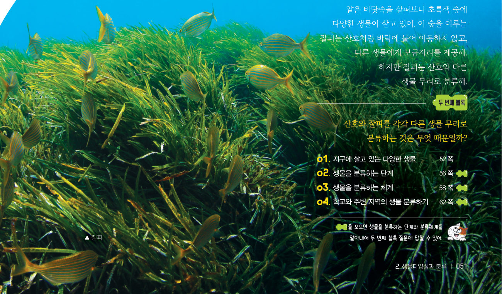
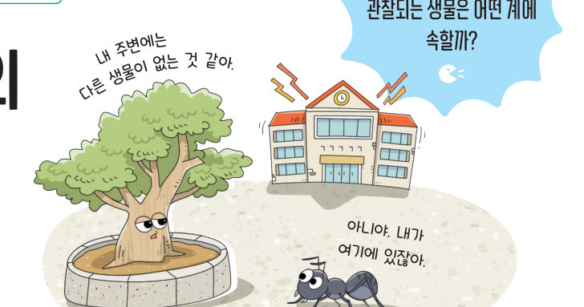
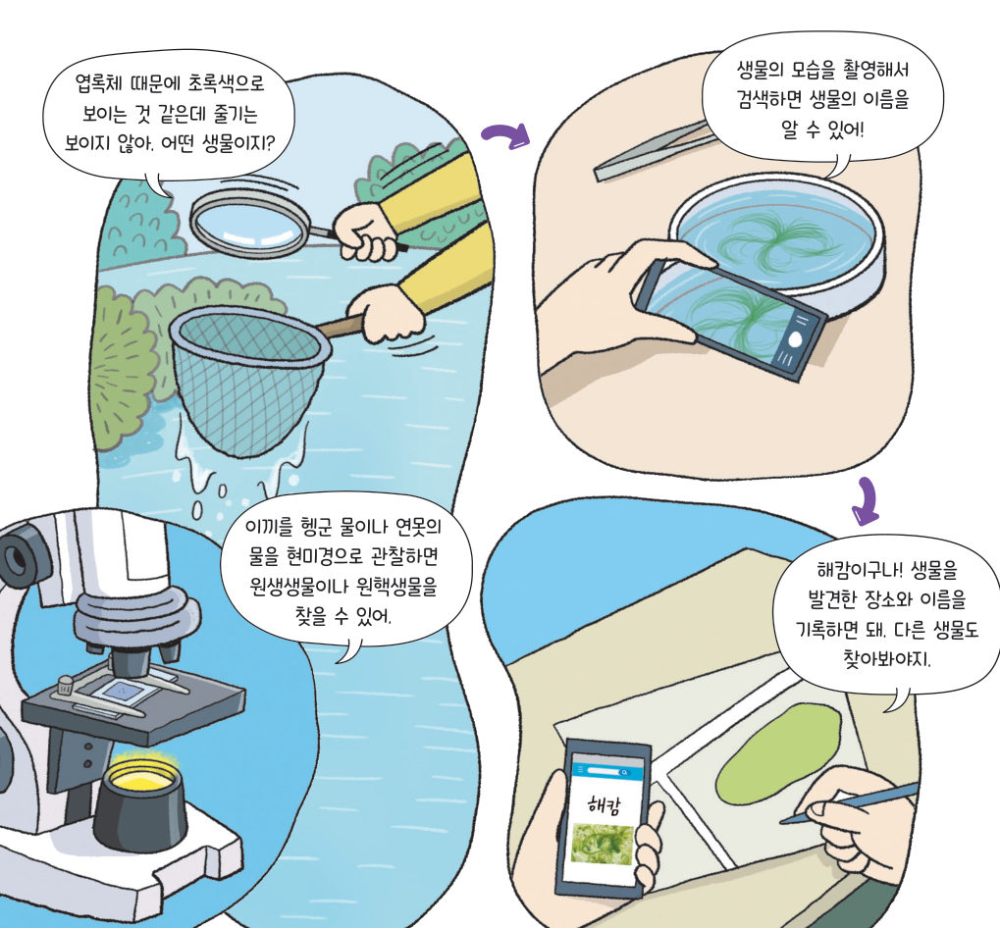
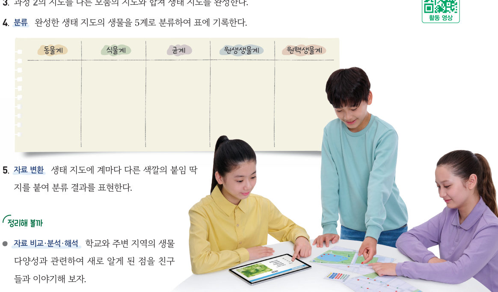

“내 주변에는 다른 생물이 없는 것 같아.” “아니야. 내가 여기에 있잖아.” 우리 학교에서 쉽게 관찰되는 생물은 어떤 계에 속할까? 가상 학교 지도에 관찰한 생물의 붙임 딱지를 붙여 생태 지도를 만들고, 5계로 분류해 보자.

생태 공간 정보를 제공하는 누리집을 활용하여 우리 지역의 디지털 생태 지도를 확인하고, 직접 작성한 생태 지도와 비교해 보자.

| 평가 항목 | 스스로 평가 |
|---|---|
| 지식·이해 생물다양성과 변이의 관계 및 생물을 분류하는 체계를 설명할 수 있는가? | |
| 과정·기능 생태 지도를 만들고, 생물을 계 수준으로 분류할 수 있는가? | |
| 가치·태도 다양한 생물에 흥미를 느끼고, 과학의 유용성을 깨달았는가? |